一种迷宫的介绍
这个迷宫不是简单的迷宫，我和同学加过很多内容
我为什么要做这个：我有一个同学，是我的好朋友，在无聊的时候我们会在纸上玩点东西，例如井字棋，后来我们玩起了迷宫，并且不断地增加东西使它更难更好玩。只可惜到后来我们到了不同的学校，从此再也没有联系过，我挺想念他的……
这个迷宫的介绍分为这几个内容：
其中模块分为：
常用模块/不常用模块（根据后来的使用频率分类）
一般模块/特殊模块（根据模块的外观类型分类）
基础理念
| 内容 | 图 |
|---|---|
| 首先，我们要把它现象为三维的很多桥，不可以跳上也不可以跳下 | 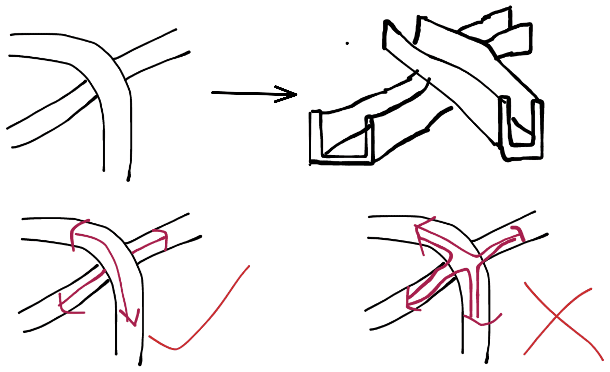 |
| 它可以分叉、重叠（但必须窄的在上）等，宽窄和高度可以变换 | 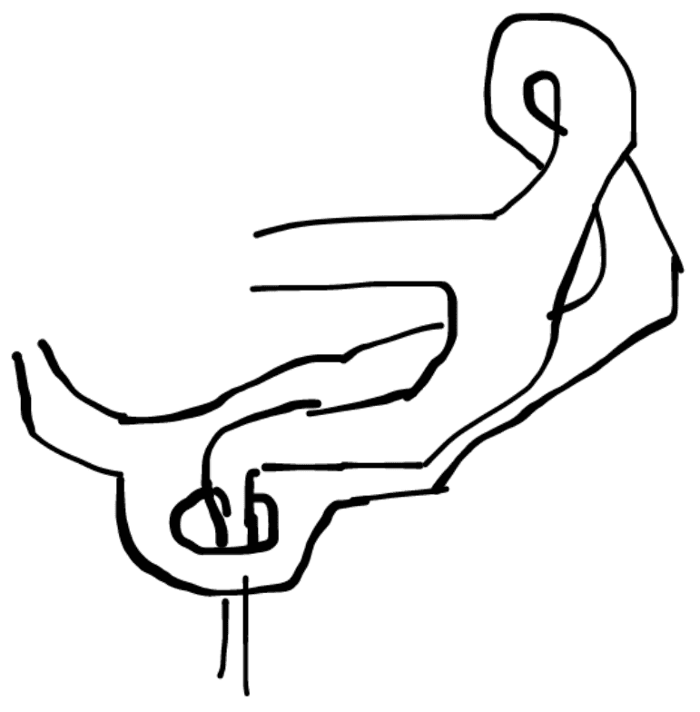 |
| 两侧可以合并 | 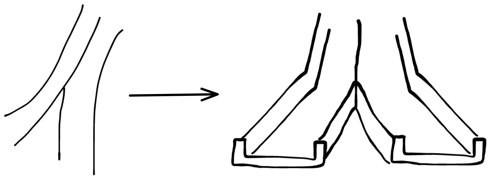 |
| 套娃不止可以套一点点 | 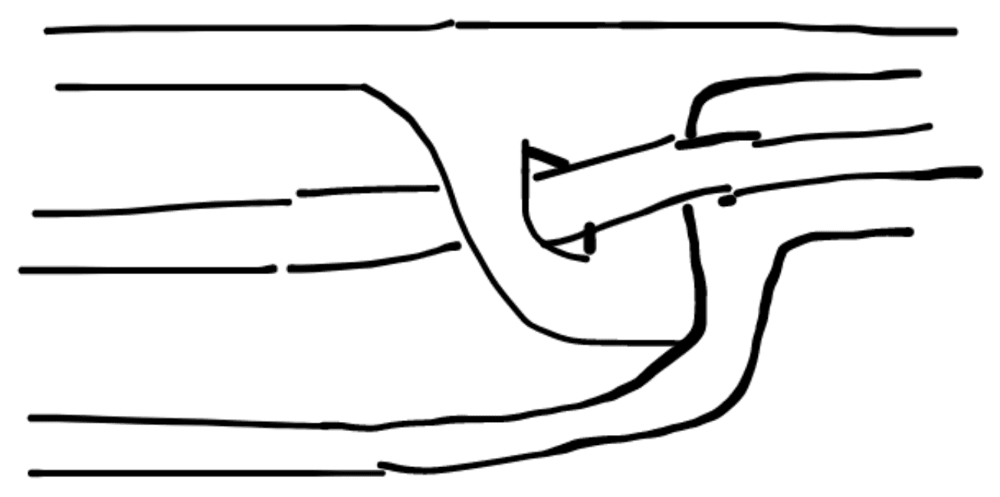 |
| 可以在路中像这样分离出来 | 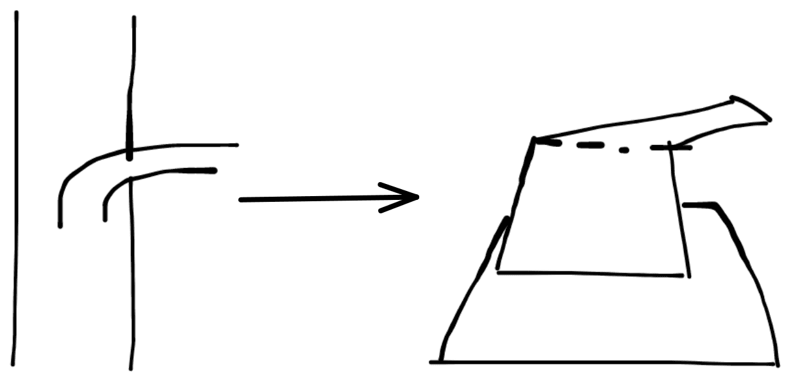 |
起点和终点：
| 内容 | 图 |
|---|---|
| 圆圈加箭头，方向标示起点与终点 | 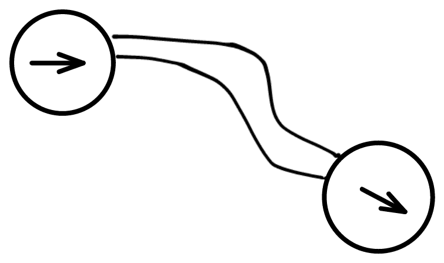 |
| 可以有多个起点与终点 | 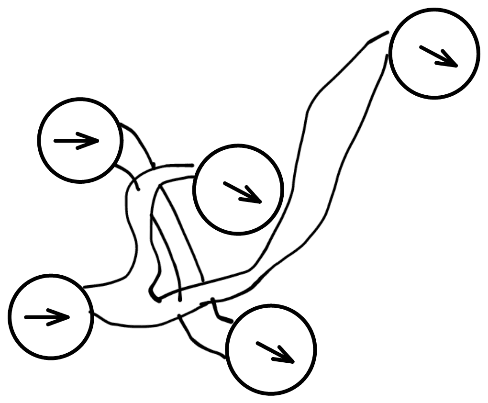 |
| 一个并不一定只表示起点或终点，也可以都表示，如图 | 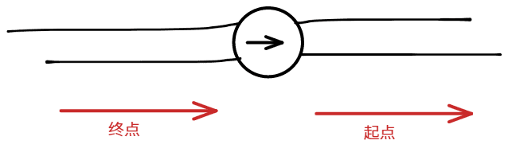 |
模块
一般模块：圈里带着其他内容或类似的
这里以使用频率分类，再到类型：
常用模块
以类型分类：
常用一般模块
字母传送
圈里只带着字母，大写A~Z，最多26对，一对只能有两个，可以传送到另一个同字母的字母传送点
飞机传送
一个简笔画飞机图标(如图)，并带一条传送线到另一个相同的图标
传送线不可以交叉，但是传送线和路之间可以交叉，只不过在交叉时要把路在表面上断开，实际上还是连接着的
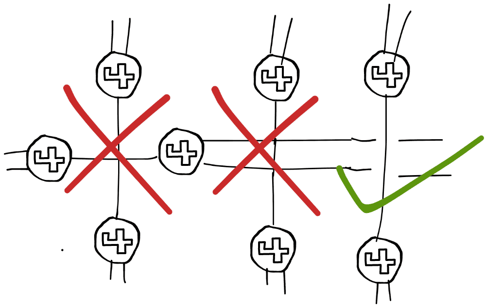
后来我发现一个较为类似的东西：
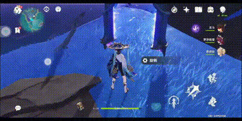
同标传送
长这样，可以传送到任意一个相同标志的传送点
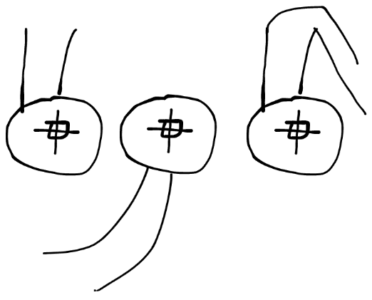
常用特殊模块
网状线条传送
将路的一头接上正方形的传送方块。传送方块可以接入路或传送线，一共最多4个，至少一个，不能重叠，只能在4面延展
由传送方块和传送线组成的传送网络中我们可以快速移动到这个传送网络中接入的任意一条路
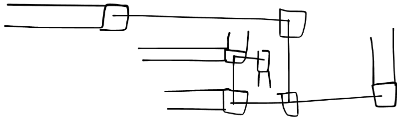
传送线不可以交叉，但是传送线和路之间可以交叉，只不过在交叉时要把路在表面上断开，实际上还是连接着的
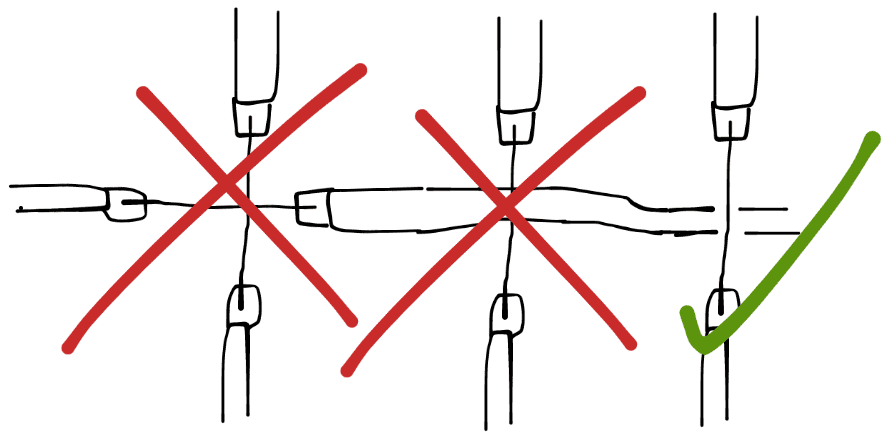
后来我发现一个较为类似的东西：
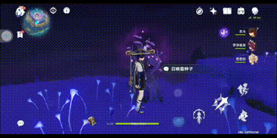
隧道
顾名思义，就是路在地里
地里的路用虚线表示，用一跟长于路宽的直~~(的)线(段)~~截断
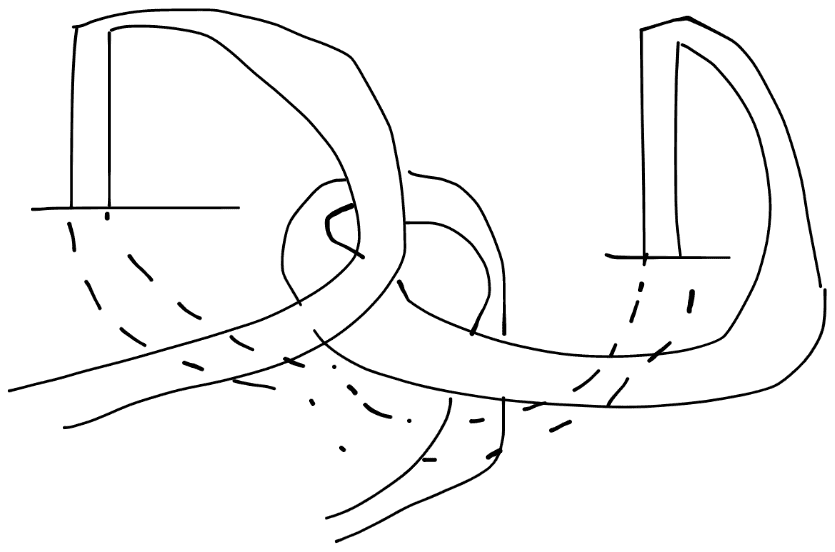
在复杂的情况下可能比较难辨认，所以不能重叠
单向门
顾名思义，只能单向通过，如图
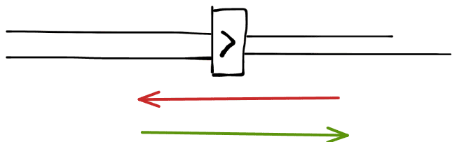
直线隔空传送
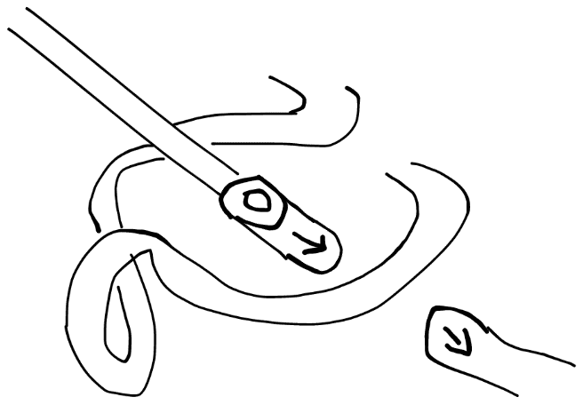
样式如图
传送端是胶囊状的，内侧是同心圆，外侧是方向指示，箭头方向可变
被传送端在路头有方向指示，箭头方向可变
在同迷宫中两个箭头能接上才能传送
中间什么都可以有
不常用模块
以类型分类：
不常用一般模块
文字
圆圈+字母"T"+编号（从1开始）
在一旁用虚线划出注释区，在里面用 "T"+编号+":"+内容 写出你要写的
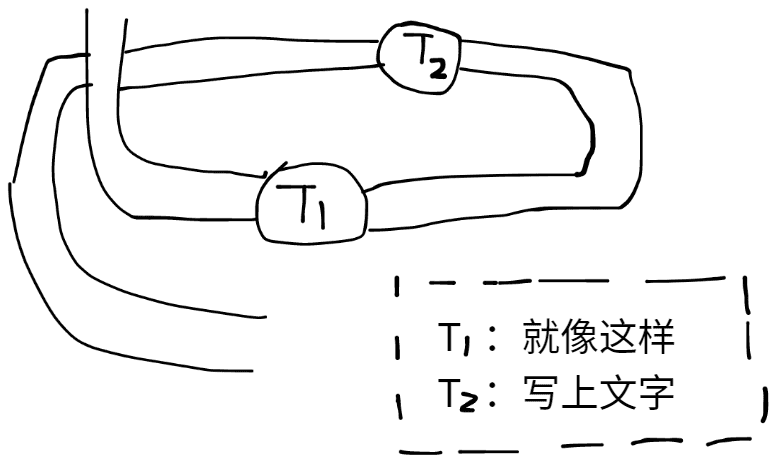
圈内传送
（自己看吧
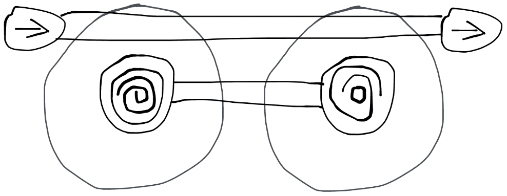
左边的：在圈内的路可以传送到中间
右边的：传送到任意一条在圈内的路
圈可以用浅颜色或超细的线表示
电池
限时完成片段（默认5秒，可额外标记）
以一个满电电池图标开启并开始计时，没电电池图标关闭，插头图标重置时间
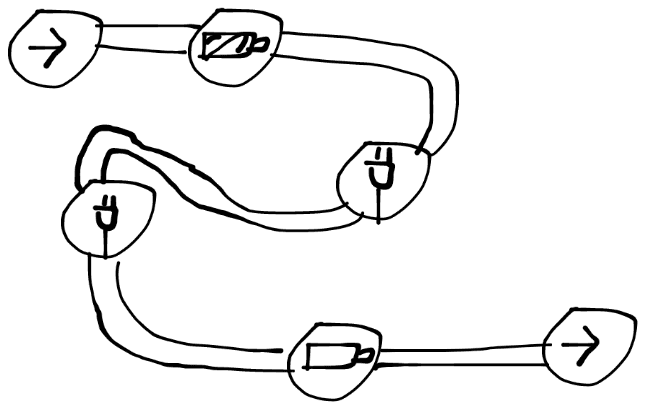
三角翻面
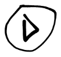
<----- 翻面图标：三角形，但是上面有断口就想象重力颠倒。到了同一条路的另一面，起点终点只在正面
或者这样理解：定义变量a，起点时a为0，遇到一个就a = 1 - a(0变1 1变0)，到终点时a == 0才行
三角计算
（列到一般模块有点勉强）
自己定义4个整数类型变量tc_up tc_down tc_lift tc_right 分别为上下左右，默认值为0，不能为负
| 上 | 下 | 左 | 右 | |
|---|---|---|---|---|
| + 1 | 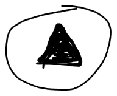 | 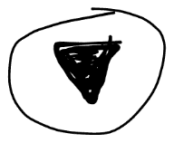 | 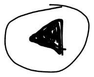 | 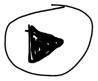 |
| - 1 | 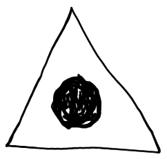 | 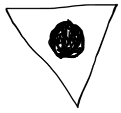 | 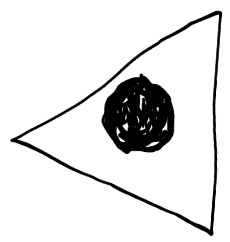 | 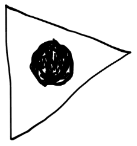 |
终点对它没要求，但锁有
锁：当上面的满足所有条件时才能通过（通过后不会清零），由锁+编号组成，
到注释区标注
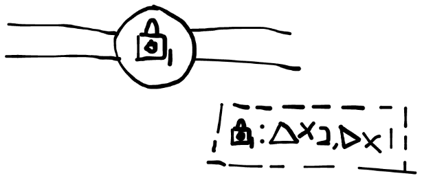
tips
（朋友不会玩建议加的）
<----- 圈中"Tips"
可获得作者正确的提示
不常用特殊模块
平行世界
用不同颜色画，各自独立，可以当作两个独立的迷宫，可以重叠
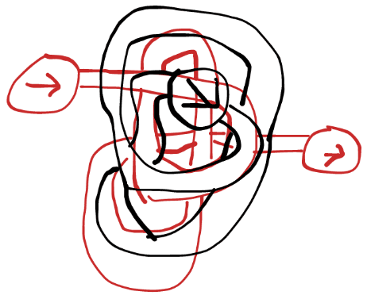
但也可以转换：如图
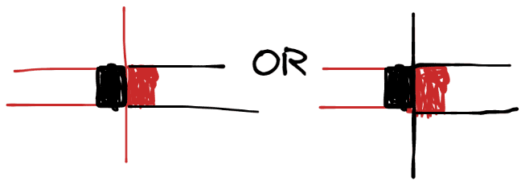
水池
可插入路，根据水池方向，只上不下（可以同高度）
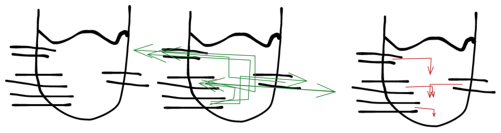
二值
（新什么冠！
分别是阴和阳，又是一个变量，和三角翻面差不多但又有区别
| 描述 | 图 |
|---|---|
| 转阴 | 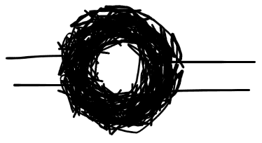 |
| 转羊 | 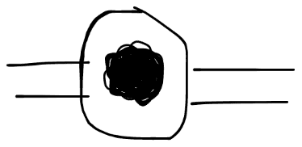 |
阴时不能通过转阴，阳时不能通过转阳
起点和终点都是阳
突变转换：跳过"阴不转阴，阳不转阳"的单向转换结构
会分出五条路，被浅分割线分割的，三个一边的是阴，两个一边的是阳
浅分割线用浅颜色或超细的线表示
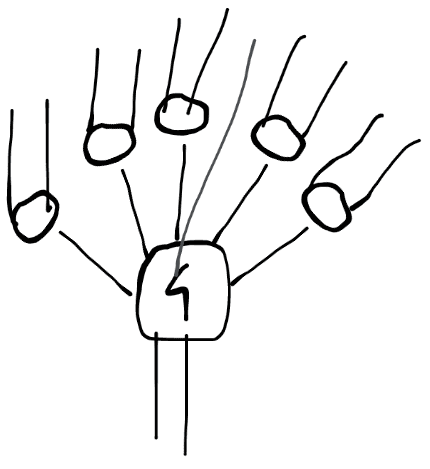
其他
如果是在本子上画，可以画出一些花样
把纸挖空一部分，盖上这页字和翻开这页字都走得通
画到纸的边缘，另一面接着
两张纸中间也可以续
使用向后传送门传送到纸张背后同一位置
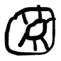
折一下纸，让它无论是打开还是关闭、翻到左边还是右边都能接上
可以无解（不建议
……